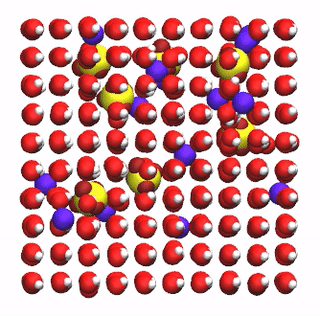
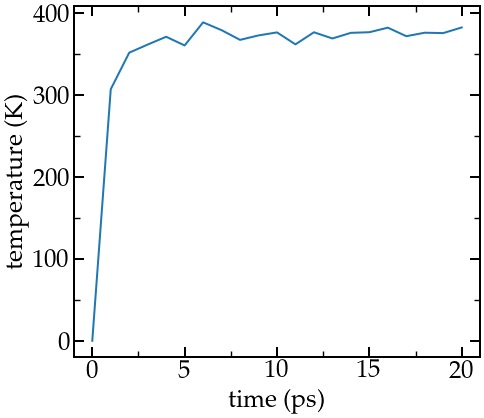
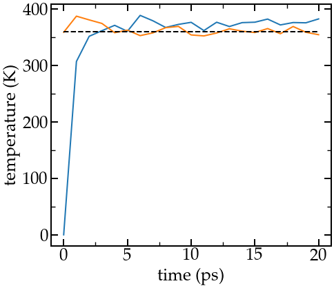

Figure: a binary fluid in a 2D box at 3 different times
The objective of this tutorial is to use the open-source code GROMACS (derived from GROningen MAchine for Chemical Simulations) to perform a simple molecular dynamics simulation: a liquid solution of water mixed with sodium (Na+) and sulfate (SO42-) ions. This tutorial illustrates several major ingredients of molecular dynamics simulations, such as energy minimization, NVT and NPT equilibration, integration of the equations of motion, and trajectory visualisation.
There are several parts to this tutorial:
Click here to contact me.
GROMACS must be installed on your machine. You can install it following the instructions of the GROMACS website. Alternatively, if you are using Ubuntu OS, you can simply execute the following command in a terminal:
sudo apt-get install gromacs
You can verify that GROMACS is indeed installed on you computer by typing in a terminal :
gmx
And you should see the version of GROMACS that has been installed (on the top), I see:
:-) GROMACS - gmx, 2021.4 (-:
as well as a quote (at the bottom), such as
GROMACS reminds you: "Computers are like humans - they do everything except think." (John von Neumann)
In addition to GROMACS, you will need the 3 following tools:
In order to run a simulation using GROMACS, one needs to generate 3 files:
Here the atoms positions are given in a conf.gro file (Gromos87 format), which you can download by clicking here. The file looks like that:
Na2SO4 solution 3557 1 SO4 O1 1 2.725 1.999 2.077 1 SO4 O2 2 2.679 2.091 1.839 1 SO4 O3 3 2.505 2.127 2.028 1 SO4 O4 4 2.542 1.890 1.930 1 SO4 S 5 2.612 2.027 1.968 (...) 898 SOL HW1 3555 3.004 3.021 2.945 898 SOL HW2 3556 3.004 2.869 2.945 898 SOL MW 3557 2.955 2.945 2.945 3.10000 3.10000 3.10000
The first line is a comment, the second is the total number of atoms, and the last line is the box dimension in nanometer. Between the second and the last line are written exactly as many lines as there are atoms. Each line indicates, from left to right, the residue Id (the atoms of the same SO42- ion have the same residue Id), the residue name, the atom name, the atom Id, and finally the position (x, y, and z). This conf.gro file can be visualized using VMD/Ovito (play with atoms' representation to make it look better than it is by default):
Figure: SO42- ions (in yellow and red) and Na+ ions (blue) in water (red and white).
As can be seen in this figure, the water molecules are arranged in a quite unrealistic regular manner, with all dipoles facing in the same direction, and possibly some overlapping between some of the atoms.
The topology file contains information about the interactions of the different atoms and molecules. You can download it by clicking here. Place it in the same folder as the conf.gro file. The top file looks like that:
#include "ff/forcefield.itp" #include "ff/h2o.itp" #include "ff/na.itp" #include "ff/so4.itp" [ System ] Na2SO4 solution [ Molecules ] SO4 7 Na 14 SOL 875
The 4 first lines are used to include the values of the parameters, that are given in separate files for clarity. Create a folder named 'ff/', and copy forcefield.itp, h2o.itp, na.itp, and so4.itp in it. The rest of the topol.top file contains the system name, and a list of the molecules. Its important that the order of the molecules in the topology file (here SO4 first, Na second, and SOL (H2O) last) matches the order of the conf.gro file. The four files located in the 'ff/' folder contain the information about the atoms (names, masses, changes, Lennard-Jones coefficients) and residues (bond and angular constraints).
The input file contains instructions about the simulation, such as
In this tutorial, 4 different input files will be written in order to perform respectively an energy minimization of the salt solution, an equilibration in the NVT ensemble, an equilibration in the NPT ensemble, and finally a production run.
It is clear from the current conf file (see the previous image) that the atoms are currently in a quite unphysical configuration. It would be risky to directly perform a molecular dynamics simulation, as atoms would most likely undergo huge forces and make the system explode. In order to bring the system into a favorable state, let us perform an energy minimization which consists in moving the atoms until the forces between them are reasonable.
Open a blank file, call it min.mdp, and save it in a folder called 'input/'. The new folder 'input/' must be located in the same folder as 'ff/', 'topol.top', and 'conf.gro'. Copy the following lines into min.mdp:
integrator = steep nsteps = 5000
These commands specify to GROMACS that the algorithm to be used is the speepest-descent, which move the atoms following the direction of the largest forces until 1 stopping criterial is reached. Then we specify the maximum number os steps to perform. In addition, we would like to be able to visualize the trajectory of the atoms during the minimization, so let us add the following command to the input file in order to print the atoms positions every 10 steps:
nstxout = 10
We now have a very minimalist input script, let us try it. From the terminal, type:
gmx grompp -f input/min.mdp -c conf.gro -p topol.top -o min -pp min -po min gmx mdrun -v -deffnm min
The first comand (grommp) is preprocessing the files in order to prepare the simulation. The grommp command also check the validity of the files. Using the '-f', '-c', and '-p' keywords, we specify which input, configuration, and topology files must be used. The other keywords '-o', '-pp', and '-po' are here to speficy the names of the output that will be produced during the run. The second command (mdrun) is the engine performing the computation from the preprocessed files (reconised thank to the -deffnm keyword). The '-v' option is here to turnon the verbose and have more information printed in te terminal. If everything goes according to the plan, you should see something like :
Steepest Descents converged to machine precision in 824 steps, but did not reach the requested Fmax < 10. Potential Energy = -6.8990930e+04 Maximum force = 2.4094606e+02 on atom 1654 Norm of force = 4.6640654e+01
It indicates us that energy minimization has been performed, even though the precision that was asked from the default parameters was not reached. This is fine, it really does not matter for us here. Let us visualize the atoms' trajectories during the minimization step: 
Video showing the motion of the atoms during the energy minimization. Note for VMD user: You can avoid having molecules 'cut in half' by the periodic boundary conditionsby rewriting the trajectory using 'gmx trjconv -f min.trr -s min.tpr -o min_whole.trr -pbc whole'
One can see that the molecules reorient themselves into more energetically favorable positions, and that the distances between the atoms are being progressively homogeneized. Let us have a look at the evolution of the potential energy of the system. To do so, we can use the internal 'energy' command of GROMACS to analyze the simulation after it's been completed (post-mortem analyze). In the terminal, type:
gmx energy -f min.edr -o epotmin.xvg
and choose 'potential'. Here the edr file produced by Gromacs during the last run is used, and the result is saved in the epotmin.xvg file. Let us plot it:
Evolution of the potential energy as a function of the number of steps during energy minimization.
Observation: One can see from the energy plot that the potential energy is initially huge and positive, which is the consequence of atoms being too close from one another, and to molecules being wrongly oriented. As the minimization progresses, the potential energy rapidly decreases and reaches a large and negative value, which is usually a good sign as it indicates that the atoms are now in an energetically favorable configuration.
The system is now ready for the molecular dynamics simulation.
Let us first perform a small (20 picoseconds) equilibration in the NVT ensemble, where the number of atom (N), volume (V), and temperature are maintained fixed (T). For that, let use write a new input script called nvt.mdp, and saved in the same 'input/' folder. Copy the following lines into it:
integrator = md nsteps = 20000 dt = 0.001
Here the molecular dynamics (md) integrator is used (leapfrog algorithm), and a number of 20000 steps with timestep (dt) 0.001 ps is requested. Let us print the trajectory in a xtc file every 1 ps by adding:
nstxout-compressed = 1000
For NVT simulation, one needs to impose the temperature of the atoms. Let us control the temperature over the course of the simulation using the v-rescale thermostat, which is the Berendsen thermostat with a stochastic term (known to give proper canonical ensemble):
tcoupl = v-rescale ref-t = 360 tc-grps = system tau-t = 0.5
Here we also specified that the thermostat is applied to the entire system (we could choose to apply it only to a certain group of atom, which is justified for some systems), and that the damping constant for the thermostat is 0.5 ps. Remark: The relatively high temperature of 360 K has been chosen here in order to reduce the viscosity of the solution and converge toward diffusion result faster. We now have a minimalist input file for performing the NVT step. Type in the terminal:
gmx grompp -f input/nvt.mdp -c min.gro -p topol.top -o nvt -pp nvt -po nvt gmx mdrun -v -deffnm nvt
Where '-c min.gro' ensures that the previously minimized configuration is used as a starting point. After the completion of the simulation, we can ensure that the system temperature indeed reached the value of 360 K by using the energy command of gromacs. Type:
gmx energy -f nvt.edr -o Tnvt.xvg
and choose 'temperature'. The temperature starts from 0, which was expected since the atoms have no velocity during a minimization step, and reaches the requested temperature of 360 K after a duration of a few picosecond, in agreement with the imposed damping time (tau-t = 0.5 ps):

Evolution of the temperature as a function of the time during the NVT equilibration.
So far, a very few commands were placed in the input file, meaning that most of the instruction have been taken by GROMACS from the default parameters. You can find what parameters were used during the last nvt run by opening the new nvt.mpd file that has been created (not in the 'input/'' folder, but in the main folder). Exploring this file, one can see for instance that plain cut-off Coulomb interactions have been used:
; Method for doing electrostatics coulombtype = Cut-off
For this system, long range Coulomb interaction is a better choice. Therefore, let us improve the NVT step by specifying more options in the input file. First, in nvt.mdp, let us impose the use of the long-range Fast smooth Particle-Mesh Ewald (SPME) electrostatics with Fourier spacing of 0.1 nm, order of 4, and cut-off of 4:
coulombtype = pme fourierspacing = 0.1 pme-order = 4 rcoulomb = 1.0
Note: With PME, the cut-off specifies which interactions are treated with Fourier transforms. Let us also specify the van der Waals interaction:
vdw-type = Cut-off rvdw = 1.0
as well as the constraint algorithm for the hydrogen bonds of the water molecules:
constraint-algorithm = lincs constraints = hbonds continuation = no
Let us also perform separate temperature baths (for water and ions=non-water respectively):
tcoupl = v-rescale tc-grps = Water non-Water tau-t = 0.5 0.5 ref-t = 360 360
cutoff-scheme = Verlet nstlist = 10 ns_type = grid
gen-vel = yes gen-temp = 360
and let us remove center of mass translational velocity of the whose system:
comm_mode = linear comm_grps = system
Run the new version of the input script. One obvious difference with the previous (minimalist) NVT run is the temperature at the beginning of the run (orange curve). In addition, the final temperature is closer to the desired temperature.

Evolution of the temperature as a function of the time during the NVT equilibration. Blue curve is from the minimalist NVT input file, and the orange curve is from the improved NVT input file.
Request the solutions by email, or register here and access all the solutions + additional LAMMPS content.
Text here...